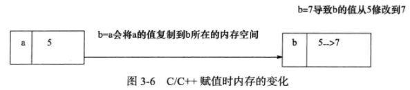
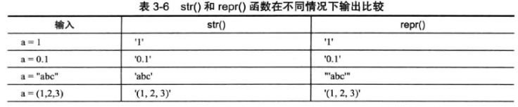
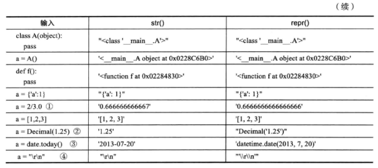

《编写高质量代码：改善 Python 程序的 91 个建议》 学习笔记
之前自己学了很多次 Python，由于用不到，所以总是学完就忘掉了。
刚好最近工作需要用到 Python，就借此机会好好学习了一番。
Pyhton 的各种特性和风格让我甚是喜欢。不过我总是感觉自己写的代码不是那么漂亮，不够 Pythonic。
所以我想通过学习一些经典建议来让我有个思路。
建议 1：理解 Pythonic 概念
对于 Pythonic 的概念，大家心中的指南就是 Tim Peters 的 《The Zen of Python》（Python 之禅）。
下面几点来自其中的内容：
- 美胜丑，显胜隐，简胜杂，平胜陡，疏胜密。
- 找到简单问题的一个方法，最好是唯一的方法（正确的解决之道）。
- 难以解释的实现，源自不好的主意；如有非常棒的主意，它的实现肯定易于解释。
代码风格建议参考 PEP8 和 Python 风格指南
比如：
- 包和模块的命名采用小写、单数形式，而且短小。
- 包通常仅作为命名空间，如只包含空的
__init__.py文件
建议 2：编写 Pythonic 代码
- 要避免劣化代码
- 避免只用大小写来区分不同的对象
- 避免使用容易引起混淆的名称
比如，重复使用已经存在于上下文中的变量名来表示不同的类型；
误用了内建名称来表示其他含义的名称而使之在当前命名空间被屏蔽；
没有构建新的数据类型的情况下使用类似于 element、list、dict等作为变量名；
使用o、l、等作为变量名。 - 不要害怕过长的变量名，可读性更重要
- 深入认识 Python 有助于编写 Pythonic 代码
- 全面掌握 Python 提供给我们的所有特性，包括语言特性和库特性。
- 学习每个 Python 新版本提供的新特性，使用 Python 推荐的惯用法来完成任务
- 深入学习业界公认的比较 Pythonic 的代码，比如 Flask、gevent 和 requests 等。
- 使用工具来达到检查和约束，比如我个人使用 Pycharm IDE 来写 Python，对代码风格的要求挺严格的…
建议 3：理解 Python 与 C 语言的不同之处
我们都知道，Python 底层是用 C 语言实现的，但切忌用 C 语言的思维和风格来编写 Python 代码。尤其重要的是，不要使用之前的编程思想。
- “缩进”与“{}”
与 C、C++、Java 等语言使用花括号来分隔代码段不同，Python 中使用严格的代码缩进方式分隔代码块。
另外，建议 Tab 替换成 4 个空格，不要混用 Tab 键和空格。 - ‘ 与 “
C 语言中单引号'与双引号"由严格的区别，单引号代表一个字符，它实际对应于编译器所采用的字符集中的一个整数值。而双引号则表示字符串，默认以\0结尾。
但是在 Python 中，单引号与双引号没有明显区别。 - 三元操作符 “?:”
三元操作符是 if…else 的简写方法，语法形式为 C ? X: Y，而在 Python 中的等价形式为 X if C else Y - switch…case
Python 中没有像 C 语言那样的 switch…case 分支语句。不过在 Python 中有很多替代的解决方法：
C
1 | switch(n) { |
Python
1 | if n == 0: |
或者
1 | def f(n): |
Python 和其他语言的差异远不止这些。但总归一句话：不要被其他语言的思维和习惯困扰，掌握 Python 的这些和思维方式才是硬道理。
建议 4：在代码中适当添加注释
Python 中有三种形式的代码注释：块注释、行注释以及文档注释（docstring）。这三种注释的惯用法大概如下几种：
- 使用块或行注释的时候仅仅注释那些复杂的操作、算法，还有可能别人难以理解的技巧或者不够一目了然地代码。
- 注释和代码隔开一定的距离，同时在块注释之后最好多留几行空白再写代码。
- 给外部可访问的函数和方法添加文档注释，无论简单与否。
注释要清楚地描述方法的功能，并对参数、返回值以及可能发生的异常进行说明，使得外部调用它的人员仅仅看docstring就能正确使用。
较为复杂的内部方法也需要进行注释。 - 推荐在文件头中包含 copyright 申明、模块描述等，如有比较可以考虑加入作者信息及变更记录。
建议 5：通过适当添加空行使代码布局更为优雅、合理
Python 代码布局也有一些基本规则可以遵循（PEP8 中有详细规范..）：
- 在一组代码表达完一个完整的思路之后，应该用空白行进行间隔。如每个函数之间，导入声明、变量赋值等。
- 尽量保持上下文语义的易理解性
- 避免过长的代码行，每行最好不要超过 80 字符。
- 不要为了保持水平对其而使用多余的空格 （写C/C++就有这习惯…）
- 空格的使用要能够在需要强调的时候竟是读者，在疏松关系的实体间起到分隔作用。
- 二元运算符、布尔运算的左右两边应该有空格
- 逗号和分号前不要使用空格
- 函数名和左括号之间、序列索引操作时序列名和 [] 之间不需要空格，函数的默认参数两侧不需要空格。
- 强调前面的操作符的时候使用空格
建议 6：编写函数的 4 个原则
** 原则 1 ** 函数设计要尽量短小，嵌套层次不宜过深。
** 原则 2 ** 函数申明应该做到合理、简单、易于使用。
** 原则 3 ** 函数参数设计应该考虑向下兼容。
** 原则 4 ** 一个函数只做一件事儿，尽量保证函数语句粒度的一致性。
Python 中函数设计的好习惯还包括：不要再函数中定义可变对象作为默认值，使用异常替换返回错误，保证通过单元测试等。
建议 7：将常量集中到一个文件
Python 中使用常量一般有以下两种方式：
- 通过命名风格来提醒使用者该变量代表的意义为常量，如常量名所有字母大写，用下划线连接各个单词，如 MAX_OVERFLOW，这只是一种约定俗成的风格。
- 通过自定义的类实现常量功能。这要求符合“命名全部为大写”和“值一旦绑定便不可再修改”这两个条件。
1
2
3
4
5
6
7
8
9
10
11
12
13class _const:
class ConstError(TypeError): pass
class ConstCaseError(ConstError): pass
def __setattr__(self, name, value):
if self.__dict__.has_key(name):
raise self.ConstError, "Can't change const.{}".format(name)
if not name.isupper():
raise self.ConstCaseError, 'const name "{}" is not all uppercase'.format(name)
self.__dict__[name] = value
import sys
sys.modules[__name__] = _const()
如果上面的代码对应的模块名为 const，使用的时候只需要 import const，便可直接定义常量了，如下代码：
1 | import const |
建议 8：利用 assert 语句来发现问题
断言（assert）在很多语言中都存在，它主要为调试程序服务，能够快速方便的检查程序的异常或者发现不恰当的输入等，可防止意想不到的情况出现。
对 Python 中使用断言需要说明如下：
- debug 的值默认设置为 True，而且是只读的。
- 断言是有性能影响的。Python 可以在运行脚本时通过
-O标识来禁用断言。比如Python -O test.py
断言实际是被设计用来捕获用户所定义的约束的，而不是用来捕获程序本身错误的，因此食用断言需要注意以下几点：
- 不要滥用，这是使用断言最基本的原则。
- 如果 Python 本身的异常能够处理就不要再使用断言。断言没有明确的异常类型。
- 不要使用断言来检查用户的输入。
- 在函数调用后，当需要确认返回值是否合理时可以使用断言。
- 当条件是业务逻辑继续下去的先决条件时可以使用断言。
建议 9：数据交换值得时候不推荐使用中间变量
建议 10：充分利用 Lazy evaluation 的特性
Lazy evaluation 常被译为“延迟计算”或“惰性计算”，值得是仅仅在真正需要执行的时候才会计算表达式的值。
充分利用 Lazy evaluation 的特性带来的好处有两个方面：
- 避免不必要的计算，带来性能上的提升。
- 节省空间，使得无限循环的数据结构成为可能。
建议 11：理解枚举替代实现的缺陷
在 Python 3.4 之前，并没有提供枚举类型。所以人们充分利用 Python 的dong’tai动态性这个特征，行除了美剧的各种替代实现：
使用类属性
1
2class Seasons:
Spring, Summer, Autumn, Winter = range(4)借助函数
1
2def enum(*posarg, **keysarg):
return type("Enum", (object,), dict(zip(posarg, xrange(len(posarg))), **keysarg))使用 collections.nametuple
1
Seasons = namedtuple('Seasons', 'Spring Summer Autumn Winter')._make(range(4))
但是这些替代有其不合理的地方：
- 允许枚举值重复
- 支持无意义的操作，比如相加
在3.4之后，加入了枚举 Enum，其实现主要参考 flufl.enum，但两者之间存在一些差别。
建议 12：不推荐使用 type 来进行类型检查
基于内建类型扩展的用户自定义类型，type函数并不能准确返回结果。
任意泪的实例的 type() 返回结果都是 <type 'instance'>。
我们可以使用 isinstance() 函数来检测类型。
建议 13：尽量转换为浮点类型后再做除法
建议 14：警惕 eval() 的安全漏洞
Python 中 eval() 函数将字符串 str 当初有效的表达式来求值并返回计算结果。其函数声明如下：eval(expression[, globals[, locals]])
其中参数 globals 为字典形式，locals 为任何映射对象，他们分别表示全局和局部命名空间。
如果传入 globals 参数的字典中缺少 __builtins__ 的时候，当前的全局命名空间将作为 globals 参数输入并且在表达式计算之前被解析。
locals 参数默认与 globals 相同，如果两者都省略的话，表达式将在 eval() 调用的环境中执行。
如果使用对象不是信任源，应该尽量避免使用 eval，在需要使用 eval 的地方可用安全性更好的 ast.literal_eval 替代。
建议 15：使用 enumerate() 获取序列迭代的索引和值
建议 16：分清 == 与 is 的适用场景
| 操作符 | 意义 |
|---|---|
| is | object identity |
| == | equal |
is 表示的是对象标识符 (object identity)，而 == 表示的意思是相等。
is 的作用是用来检查对象的标识符是否一致的，也就是比较两个对象在内存中是否拥有同一块内存空间。
== 才是用来检验两个对象的值是否相等的，它实际调用内部 __eq__() 方法。
建议 17：考虑兼容性，尽可能使用 Unicode
建议 18：构建合理的包层次来管理 module
什么是包？简单说包即是目录，但是与目录不同，它除了包含常规的 Python 文件以外，还包含一个 __init__.py 文件，同时它允许嵌套。
包有以下几种导入方法：
- 直接导入一个包
import Package - 导入子模块或子包，包嵌套的情况下可以进行嵌套导入
1
2from Package import Module1
import Package.Module1
包的使用能够带来以下便利：
- 合理组织代码，便于维护和使用
- 能够有效的避免命名空间冲突
建议 19：有节制的使用 from…import 语句
在使用 import 的时候注意以下几点：
- 一般情况下尽量优先使用 import a 形式
- 有节制地使用 from a import B 形式，可以直接访问 B
- 尽量避免使用 from a import *，因为这会污染命名空间，并且无法清晰的表示导入了哪些对象
当加载一个模块的时候，解释器实际上要完成以下动作：
- 在 sys.modules 中进行搜索看看模块是否已经存在，如果存在，则将其导入到当前局部命名空间，加载结束。
- 如果在 sys.modules 中找不到对应的模块名称，则为需要导入的模块创建一个字典对象，并将该对象信息插入 sys.modules 中。
- 加载钱确认是否需要对模块对应的文件进行编译，如果需要则先进行编译。
- 执行动态加载，在当前模块的命名空间中执行编译后的字节码，并将其中所有的对象放入模块对应的字典中。
对于 from…import 无节制的使用会带来什么问题：
- 命名空间的冲突
- 循环嵌套导入的问题
建议 20：优先使用 absolute import 来导入模块
建议 21：i+=1 不等于 ++i
Python 中是不支持概念中 ++i 操作的。
但是如果你这么写，会被 Python 解释成 +(+i)，其中 + 表示正号
建议 22：使用 with 自动关闭资源
with 语句可以在代码块执行完毕后还原进入该代码块时的现场。包含有 with 语句的代码块的执行过程如下：
- 计算表达式的值，返回一个上下文管理器对象。
- 加载上下文管理器对象的
__exit__()方法以备后用 - 调用上下文管理器对象的
__enter__()方法 - 如果 with 语句中设置了目标对象，则将
__enter__()方法的返回值赋值给目标对象 - 执行 with 中的代码块
- 如果步骤5中代码正常结束，调用上下文管理器的
__exit__()方法，其返回值直接忽略。 - 如果步骤5中代码执行过程中发生异常，调用上下文管理器的
__exit__()方法，并将异常类型、值及 traceback 信息作为参数传递给__exit__()方法。
如果__exit__()返回值为 False，则异常会重新抛出；如果其返回值为 True，异常被挂起，程序继续执行。
建议 23：使用 else 子句简化循环（异常处理）
建议 24：遵循异常处理的几点基本原则
- 注意异常的粒度，不推荐在 try 中放入过多的代码。
- 谨慎使用单独的 except 语句处理所有异常，最好能定位具体的异常。
- 注意异常捕获的顺序，在合适的层次处理异常。推荐的方法是将继承结构中子类异常在前面的 except 语句中抛出，而父类异常在后面的 except 语句中抛出。
- 使用更为友好的异常信息，遵循异常参数的规范。
建议 25：避免 finally 中可能发生的陷阱
在实际应用程序开发过程中，并不推荐在 finally 中使用 return 语句或 break 进行返回，这种处理方式不仅会带来误解而且可能会引起非常严重的错误。
建议 26：深入理解 None，正确判断对象是否为空
Python 中以下数据会当作空来处理：
- 常量 None
- 常量 Flase
- 任何形式的数值类型零，如0、0L、0.0、0j
- 空的序列，如 ‘’、()、[]
- 空的字典，如 {}
- 当用户定义的类中定义了 nonzero() 方法和 len() 方法，并且该方法返回整数0或者布尔值 False 的时候。
其中常量 None 的特殊性体现在它既不是0、False，也不是空字符串，他就是一个空值对象。其数据类型为 NoneType，遵循单例模式，是唯一的，因而不能创建 None 对象。
所有赋值为 None 的变量都相等，并且 None 与任何其他非 None 的对象比较结果都为 False
错误的比较
1 | test_list = [] |
正确的比较
1 | test_list = [] |
建议 27：连接字符串应优先使用 join 而不是 +
jion 的效率要高于 + 操作符
jion 的时间复杂度为O(n), + 的时间复杂度为 O(n^2)
建议 28：格式化字符串时尽量使用 .format 方式而不是 %
% 操作符格式化字符串时有如下几种用法：
直接格式化字符或者数值
1
print('your score is %06.1f' % 9.5)
以元组的形式格式化
1
2import math
print('the %s of a circle with radius %f is %0.3f' %('circumference', 3, math.pi*radius*2))以字典的形式格式化
1
2itemdict = {'itemname': 'circumference', 'radius': 3, 'value': math.pi*radius*2}
print('the %(itemname)s of a circle with radius %(radius)f is %(value)0.3f' % itemdict)
.format 方式格式化字符串的基本语法为：[[填充符] 对齐方式][符号][#][0][宽度][,][.精确度][转换类型]
其中填充符可以是除了 { 和 } 符号之外的任意符号。
| 对其方式 | 解释 |
|---|---|
| < | 表示左对其，是大多数对象为默认的对其方式 |
| > | 表示右对其，数值默认的对其方式 |
| = | 仅对数值类型有效，如果有符号的话，在符号后数值前进行填充，如-0029 |
| ^ | 居中对其，用空格进行填充 |
| 符号 | 解释 |
|---|---|
| + | 正数前加 +，负数前加 - |
| - | 正数前不加符号，负数前加 -，为数值的默认形式 |
| 空格 | 正数前加空格，负数前加 - |
.format 常用用法：
使用位置符号
使用名称
通过属性
1
2
3
4
5
6
7
8
9
10
11
12class Customer(object):
def __init__(self, name, gender, phone):
self.name = name
self.gender = gender
self.phone = phone
def __str__(self):
# 通过 str() 函数返回格式化的结果
return 'Customer({self.name},{self.gender},{self.phone})'.format(self=self)
str(Customer('Lisa', 'Female', '67889'))
'Customer(Lisa, Female, 67889)'格式化元组的具体项
1
2
3
4point = (1,3)
'X:{0[0]};Y:{0[1]}'.format(point)
'X:1;Y:3'
使用 .format 的理由：
- format 方式在使用上较 % 操作符更为灵活
- format 方式可以方便的作为参数传递
- % 最终会被 .format 方式所替代
- % 方法在某些情况下使用时需要特别小心
建议 29：区别对待可变对象和不可变对象
数字、字符串、元组属于不可变对象
字典、列表、字节数组属于可变对象
看一个经典例子：
1 | class Student(object): |
结果
1 | C:\Users\MeeSong\AppData\Local\Programs\Python\Python35\python.exe C:/Users/MeeSong/Desktop/test/test.py |
看到没，结果与预想的并不一样。
我们通过 id(stu_a.course) 和 id(stu_b.course) (id 是查看对象的内存标识的，即内存地址) 发现两个结果是一样的，说明两个list对象指的是同一块地址。
但 stu_a 和 stu_b 本身却是两个不同的对象。在实例化两个对象的时候，这两个对象被分配了不同的内存空间，并且调用 init() 函数进行了初始化。
但由于 init() 函数的第二个参数是个默认参数，默认桉树在函数被调用的时候仅仅被评估一次，以后都会使用第一次评估的结果，因此实际上对象空间里面 course 所指向的是同一个list地址。
我们改成这样就好了
1 | class Student(object): |
另外，切片操作相当于浅拷贝。
1 | b |
对于不可变对象，当我们对其进行相关操作的时候，Python 实际上仍然保持原来的值，并重新创建一个新的对象。
比如字符串操作
1 | s1 = '123' |
建议 30：[]、() 和 {}：一致的容器初始化形式
建议使用列表解析来初始化，即列表推导式（或元组和字典）
列表推导式的语法为：[expr for iter_item in iterable if cond_expr]
元组推导式的语法为：(expr for iter_item in iterable if cond_expr)
集合推导式的语法为：{expr for iter_item in iterable if cond_expr}
字典推导式的语法为：{exprk:exprv for iter_item in iterable if cond_expr}
1 | [v**2 if v%2 == 0 else v+1 for v in [2,3,4,-1] if v>0] |
列表推导式非常灵活：
- 支持多重嵌套
- 支持多重迭代
- 列表推导式的语法中的表达式可以是简单表达式，也可以是复杂表达式，甚至是函数
- 列表推导式语法中的iterable可以是任意可迭代对象
为什么推荐俺在需要生成列表的时候使用列表推导式呢？
- 使用列表推导式更为直观清晰，代码更为简洁
- 列表推导式的效率更高
建议 31：记住函数传参既不是传值也不是传引用
先看两张图

对于在Python函数参数是传值还是传引用这个问题：
正确叫法应该是传对象或者说传对象的引用。函数参数在传递的过程中将整个对象传入，
对可变对象的修改在函数外部以及内部都可见，调用者和被调用者之间共享这个对象，
而对于不可变对象， 由于并不能真正被修改，因此修改往往是通过生成一个新对象然后赋值来实现的
建议 32： 警惕默认参数潜在的问题
这个问题同 建议 29：区别对待可变对象和不可变对象 的例子
建议 33：慎用变长参数
Python 支持可变长度的参数列表，可以通过在函数定义的时候使用 args 和 *kwargs 这两个特殊语法来实现。
- 使用 *args 来实现可变参数列表： *args 用于接收一个包装为元组形式的参数列表来传递非关键字参数，参数个数可以任意。
- 使用 **kwargs 接受字典形式的关键字参数列表，其中字典的键值对分别表示不可变参数的参数名和值
为什么要慎用可变长度参数呢：
- 使用过于灵活
- 如果一个函数的参数列表很长，虽然可以通过使用 args 和 *kwargs 来简化函数的定义，但通常这意味着这个函数可以有更好的实现方式，应该被重构。
- 可变长参数适合在下列情况下使用：
- 为函数添加一个装饰器
- 如果参数的数目不确定，可以考虑使用变长参数
- 用来实现函数的多态或者在继承情况下子类需要调用父类的某些方法的时候
建议 34：深入理解 str() 和 repr() 的区别
函数 str() 和 repr() 都可以将 Python 中的对象转换为字符串，他们的使用及输出都非常相似


区别主要有以下几点：
- 两者之间的目标不同：str() 主要面向用户，其目的是可读性，返回形式为用户友好性和可读性都较强的字符串类型;
而 repr() 面向的是Python解释器，或者说开发人员，其目的是准确性，返回值表示 Python 解释器内部的含义，常作为编程人员 debug 用途 - 在解释器中输入a时，默认调用
repr()函数，而print(a)则调用 str() 函数 - repr() 的返回值一般可以用 eval() 函数来还原对象，通常来说有这个等式：
obj == eval(repr(obj)) - 这两个方法分别调用内建的
__str__()和__repr__()方法，一般来说在类中都应该定义__repr__()方法，而__str__()方法则为可选，
当可读性比准确性更重要的时候应该考虑定义__str__()方法。如果类中没有定义__str__()方法，则默认会使用__repr__()方法的结果来返回对象的字符串形式。
用户实现__repr__()方法的时候最好保证其返回值可以用 eval() 方法使对象重新还原
建议 35：分清 staticmenthod 和 classmethod 的适用场景
静态方法没有常规方法的特殊行为，如绑定、非绑定、隐式参数等规则
类方法的调用使用类本身作为其隐含参数，但调用本身并不需要显示提供该参数
类方法能够根据不同的类型返回对应的类的实例
既不跟特定的实例相关，也不跟特定的类相关的时候，用静态方法更合适
建议 36：掌握字符串的基本用法
小技巧
Python 遇到未闭合的小括号时会自动将多行代码拼接为一行和把相邻的两个字符串字面量拼接到一起。
1 | s = ('SELECT * ' |
性质判定
| 方法 | 描述 |
|---|---|
| isalnum() | 是否只是数字或字母 |
| isalpha() | 是否字母 |
| isdigit() | 是否数字 |
| islower() | 是否小写 |
| isupper() | 是否大写 |
| isspace() | 是否空白符 |
| istitle() | 是否标题化的，即每个单词首字母是否大写 |
| startswith(prefix[,start[,end]]) | 是否以prefix开头，可范围内检查，prefix可接受tuple类型的实参 |
| endswith(suffix[,start[,end]]) | 是否以suffix结尾，可范围内检查，suffix可接收tuple类型的实参 |
查找
| 方法 | 描述 |
|---|---|
| count(sub[,start[,end]]) | 查找sub在字符串中出现的次数，这个数值在调用replace方法时用得着 |
| find(sub[,start[,end]]) | 查找sub在字符串中的位置，找不到时返回-1 |
| index(sub[,start[,end]]) | 同find，不过找不到会抛出 ValueError 异常，另外对于是否包含字串，更推荐使用 in 和 not in 操作符 |
| rfind(sub[,start[,end]]) | 同find，从右侧开始 |
| rindex(sub[,start[,end]]) | 同index，从右侧开始 |
替换
| 方法 | 描述 |
|---|---|
| replace(old, new[,count]) | 把字符串中的old替换为new，count为最多替换次数 |
| translate(table[,deletechars]) | 根据table转换字符串的字符，可以由string.maketrans(frm,to)生成；deletechars为过滤掉的字符 |
分切
| 方法 | 描述 |
|---|---|
| partition(sep) | 它接受一个字符串参数，并返回一个3个元素的 tuple 对象。如果sep没出现在母串中，返回值是 (sep, ‘’, ‘’)；否则，返回值的第一个元素是 sep 左端的部分，第二个元素是 sep 自身，第三个元素是 sep 右端的部分。 |
| rpartition(sep) | |
| splitlines([keepends]) | |
| split([sep [,maxsplit]]) | 参数 maxsplit 是分切的次数，即最大的分切次数，所以返回值最多有 maxsplit+1 个元素。 |
| rsplit([sep[,maxsplit]]) |
不过有一个需要注意的地方
对于字符串s、s.split() 和 s.split(‘ ‘) 返回值是不同的
1 | ' hello world!'.split() |
产生差异的原因在于当忽略 sep 参数或sep参数为 None 时与明确给 sep 赋予字符串值时 split() 采用两种不同的算法。
对于前者，split() 先去除字符串两端的空白符，然后以任意长度的空白符串作为界定符分切字符串（即连续的空白符串被当作单一的空白符看待）；对于后者则认为两个连续的 sep 之间存在一个空字符串。
连接
join() 函数的高效率（相对于循环相加而言），使它成为最值得关注的字符串方法之一。
它的功用是将可迭代的字符串序列连接成一条长字符串，如：
1 | conf = {'host':'127.0.0.1', |
变形
| 方法 | 描述 |
|---|---|
| lower() | 转小写 |
| upper() | 转大写 |
| capitalize() | 把字符串的第一个字符大写 |
| swapcase() | 翻转 string 中的大小写 |
| title() | 返回”标题化”的 string,就是说所有单词都是以大写开始，其余字母均为小写 |
title()函数是比较特别的，它的功能是将每一个单词的首字母大写，并将单词中的非首字母转换为小写（英文文章的标题通常是这种格式）。
1 | 'hello world!'.title() |
因为title() 函数并不去除字符串两端的空白符也不会把连续的空白符替换为一个空格，所以建议使用string 模块中的capwords(s)函数，它能够去除两端的空白符，再将连续的空白符用一个空格代替。
1 | ' hello world!'.title() |
删减
| 方法 | 描述 |
|---|---|
| strip([chars]) | 在 string 上执行 lstrip()和 rstrip() |
| lstrip([chars]) | 截掉 string 左边的空格 |
| rstrip([chars]) | 删除 string 字符串末尾的空格. |
*strip()函数族用以去除字符串两端的空白符，空白符由string.whitespace常量定义。
填充
| 方法 | 描述 |
|---|---|
| center(width[, fillchar]) | 返回一个原字符串居中,并使用空格填充至长度 width 的新字符串， fillchar 参数指定了用以填充的字符，默认为空格 |
| ljust(width[, fillchar]) | 返回一个原字符串左对齐,并使用空格填充至长度 width 的新字符串 |
| rjust(width[, fillchar]) | 返回一个原字符串右对齐,并使用空格填充至长度 width 的新字符串 |
| zfill(width) | 返回长度为 width 的字符串，原字符串 string 右对齐，前面填充0 |
| expandtabs([tabsize]) | 把字符串 string 中的 tab 符号转为空格，tab 符号默认的空格数是 8 |
编码
| 方法 | 描述 |
|---|---|
| encode([encoding[,errors]]) | 以 encoding 指定的编码格式编码 string，如果出错默认报一个ValueError 的异常，除非 errors 指定的是’ignore’或者’replace’ |
| decode([encoding[,errors]]) | 以 encoding 指定的编码格式解码 string，如果出错默认报一个 ValueError 的 异 常 ， 除 非 errors 指 定 的 是 ‘ignore’ 或 者’replace’ |
建议 37：按需选择 sort() 或者 sorted()
sorted(iterable[, cmp[, key[, reverse]]])s.sort([cmp[, key[, reverse]]])
- cmp 为用户定义的任何比较函数，函数的参数为两个可比较的元素（来自iterable或者list），函数根据第一个参数与第二个参数的关系依次返回 -1、0、+1（第一个参数小于第二个参数则返回负数）。该参数默认值为None。
- key 是带一个参数的函数，用来为每个元素提取比较值，默认为None（即直接比较每个元素）
- reverse 表示结果是否反转
sort() 与 sorted() 之间的比较：
- 相比于 sort()，sorted() 使用范围更为广泛
- 当排序对象为列表的时候两者适合的场景不同。sorted() 函数会返回一个排序后的立标，原有列表保持不变；而 sort() 函数会直接修改原有列表，函数返回为 None
- 无论是 sort() 还是 sorted() 函数，传入参数 key 比传入参数 cmp 效率要高。
- sorted() 函数功能非常强大，使用它可以方便的针对不同的数据结构进行排序，从而满足不同需求。对于 itemgetter 的使用，参见 python operator.itemgetter函数与sorted的妙用
对字典进行排序
1
2
3
4
5phonebook = {'Linda':'7750', 'Bob':'9345', 'Carol':'5834'}
from operator import itemgetter
sorted_pb = sorted(phonebook.items(), key=itemgetter(1))
sorted_pb
[('Carol', '5834'), ('Linda', '7750'), ('Bob', '9345')]多维 list 排序
1
2
3
4from operator import itemgetter
gameresult = [['Bob', 95.00, 'A'], ['Alan', 86.0, 'C'], ['Mandy', 82.5, 'A'], ['Rob', 86, 'E']]
sorted(gameresult, key=itemgetter(2,1))
[['Mandy', 82.5, 'A'], ['Bob', 95.0, 'A'], ['Alan', 86.0, 'C'], ['Rob', 86, 'E']]字典中混合 list 排序
1
2
3
4
5
6
7
8
9
10mydict = {'Li': ['M', 7],
'Zhang': ['E', 2],
'Wang': ['p', 3],
'Du': ['c', 2],
'Ma': ['c', 9],
'Zhe': ['H', 7]}
print(sorted(mydict.items(), key=lambda item: itemgetter(1)(itemgetter(1)(item))))
[('Zhang', ['E', 2]), ('Du', ['c', 2]), ('Wang', ['p', 3]), ('Li', ['M', 7]), ('Zhe', ['H', 7]), ('Ma', ['c', 9])]list 中混合字典排序
1
2
3
4
5
6
7gameresult = [{'name': 'Bob', 'wins': 10, 'losses': 3, 'rating': 75.00},
{'name': 'David', 'wins':3, 'losses': 5, 'rating': 57.00},
{'name': 'Carol', 'wins':4, 'losses': 5, 'rating': 57.00}]
print(sorted(gameresult, key=itemgetter('rating', 'name')))
[{'wins': 4, 'name': 'Carol', 'losses': 5, 'rating': 57.0}, {'wins': 3, 'name': 'David', 'losses': 5, 'rating': 57.0}, {'wins': 10, 'name': 'Bob', 'losses': 3, 'rating': 75.0}]
建议 38： 使用 copy 模块进行深拷贝对象
概念：
- 浅拷贝（shallow copy）：构造一个新的复合对象并将从原对象中发现的引用插入该对象中。浅拷贝的实现方式与多种，如工厂函数、切片操作、copy模块中的copy操作。
- 深拷贝（deep copy）：也是构造一个新的复合对象，但是遇到引用会继续递归拷贝其所指向的具体内容，也就是说它会针对引用所指向的对象继续执行拷贝，因此产生的对象不受其他引用对象操作的影响。
建议 39：使用 Counter 进行计数统计
Counter 类是自 Python2.7 起增加的，属于字典的子类，是一个容器对象，主要用来统计散列对象。
建议 40：深入掌握 ConfigParser
建议 41：使用 argparse 处理命令行参数
另外，还有更先进好用的 docopt，不过暂时还没加入标准库。详见 docopt
建议 42：使用 pandas 处理大型 CSV 文件
CSV(Comma Separated Values) 作为一种逗号分隔符型值的纯文本格式文件，在实际应用中经常用到，如数据库的导入导出、数据分析中记录的存储等。
CSV 处理相关 API：
- ‘reader(csvfile[, dialect=’excel’][, fmtparam])’，主要用于 CSV 文件的读取，返回一个 reader 对象用于在 CSV 文件内容上进行行迭代
- ‘csv.writer(csvfile, dialect=’excel’, **fmtparams)’，用于写入 CSV 文件。
- ‘csv.DictReader(csvfile, fieldnames=None, restkey=None, restval=None, dialect=’excel’, args, *kwds)’，将读入的信息映射到一个字典中去
- ‘csv.DictWrite(csvfile, fieldnames, restval=’’, extrasaction=’raise’, dialect=’excel’, args, *kwds)’，用于支持字典的写入。
但是在处理大型 CSV 文件，上面API会抛出 MemoryError 异常。
Pandas 即 Python Data Analysis Library，是为了解决数据分析而创建的第三方工具，支持多种文件格式处理，包括 CSV、HDF5、HTML 等，能够提供高效的大型数据处理。
- Series：它是一种类似数据的带索引的一维数据结构，支持的类型与 NumPy 兼容。
- DataFrame：类似于电子表格，其数据为排好序的数据列的集合，每一列都可以是不同的数据类型，它类似于一个二维数据结构，支持行和列的索引。
建议 43：一般情况使用 ElementTree 解析 XML
- 使用简单
- 内存上消耗明显低于 DOM 解析。
- 支持 XPath 查询
建议 44：理解模块 pickle 优劣
pickle 估计是最通用的序列化模块了，它还有个 C 语言的实现 cPickle，相比 pickle 来说具有较好的性能，其速度大概是 pickle 的 1000 倍，除了不能被继承之外，它们两者的使用基本上区别不大
pickle 中最主要的两个函数对儿为 dump() 和 load()，分别来进行对象的序列化和反序列化：
- pickle.dump(obj, file[, protocol])：序列化数据到一个文件描述符。
- pickle.load(file)：表示把文件中的对象恢复为原来的对象。
pickle 模块的优点：
- 接口简单，容易使用
- pickle 的存储格式具有通用性，能够被不同平台的 Python 解析器共享
- 支持的数据类型广泛
- pickle 模块是可扩展的
- 能够自动维护对象间的引用，如果一个对象上存在多个引用，pickle 后不会改变对象间的引用
pickle 模块的限制：
- pickle 不能保证操作的原子性
- pickle 存在安全性问题
- pickle 协议是 Python 特性的，不同语言之间的兼容性难以保证
建议 45：序列化的另一个不错的选择——JSON
相比 pickle，JSON 具有以下优势：
- 使用简单，支持多种数据类型，仅存在以下两大数据结构：
- 名称 / 值 对儿的集合 （dict）
- 值的有序列表 （list）
- 存储格式可读性更为友好，容易修改。
- JSON 支持跨平台跨语言
- 具有较强的扩展性，JSON 模块还提供了编码（JSONEncoder）和解码类（JSONDecoder），以便用户对其默认不支持的序列化类型进行扩展
建议 46：使用 traceback 获取栈信息
常用方法：
- traceback.print_exception(type, value, traceback[, limit[, file]])，根据 limit 的设置打印栈信息，file 为 None 的情况下定位到 sys.stderr，否则写入到文件；
其中 type、value、traceback 这3个参数对应的值可以从 sys.exc_info() 中获取 - traceback.print_exc(limit[, file])，为 print_exception 函数的缩写，不需要传入 type、value、traceback 这三个参数
- traceback.format_exc([limit])，与 print_exc() 类似，区别在于返回形式为字符串
- traceback.extract_stack([file[, limit]])，从当前栈帧中提取 trace 信息。
建议 47：使用 logging 记录日志信息
使用见 Python的日志系统
建议 48：使用 threading 模块编写多线程程序
实际应用中推荐使用 threading 模块而不是 thread 模块：
- threading 模块对同步原语的支持更为完善和丰富
- threading 模块在主线程和子线程交互上更为友好
- thread 模块不支持守护线程
- python3 中已经不存在 thread 模块
使用见 Python中使用线程的技巧
建议 49：使用 Queue 使多线程编程更安全
建议 50：利用模块实现单例模式
建议 51：用 mixin 模式让程序更加灵活
建议 52：用发布订阅模式实现松耦合
建议 53：用状态模式美化代码
建议 54：理解 built-in objects
Python 一切皆对象。
自 Python2.2 之后，为了弥补内建类型和古典类之间的鸿沟，引入了新式类。
新式类中，object 是所有内建类型的积累，用户定义的类可以继承自 object 也可继承自内建类型。
这里的鸿沟指的是：在 2.2 版本之前，类和类型并不统一，如 a 是古典类 ClassA 的一个实例，那么
a.__class__返回'class__main__ClassA'，type(a)返回<type'instalce'>。 当引入新类后，比如 ClassB 是个新类，b 是 ClassB 的实例，b.class 和 type(b) 都是返回'class__main__.ClassB'
新式类相对于古典类来说有很多优势：能够基于内建类型构建新的用户类型，支持 property 和描述符特性等。
建议 55：__init__() 不是构造方法
实际上 __init__() 并不是真正意义上的构造方法，__init__()方法所做的工作是在类的对象创建好之后进行变量的初始化。__new__()方法才会真正创建实例，是类的构方法。
两个方法之间的不同点，总结如下：
object.__new__(cls[, args...])：其中 cls 代表类，args 为参数列表object.__init__(self[, args...])：其中 self 代表实例对象，args 为参数列表__new__()方法是静态方法，__init__()为实例方法__new__()方法一般需要返回类的对象，当返回类的对象时将会自动调用__init__()方法进行初始化，如果没有对象返回，则__init__()方法不会被调用。__init__()方法不需要显式返回，默认为 None，否则会在运行时抛出 TypeError- 当需要控制实例创建的时候可使用
__new__()方法，而控制实例初始化的时候用__init__()方法 - 一般情况下不需要覆盖
__new__()方法，但当子类继承自不可变类型，如 str、int、unicode 或者 tuple 的时候，往往需要覆盖该方法。 - 当需要覆盖
__new__()和__init__()方法的时候这两个方法的参数必须保持一致，如果不一致将会导致异常。
什么特殊情况下需要覆盖 __new__() 方法呢？
- 当类继承不可变类型且默认的
__new__()方法不能满足需求的时候。 - 用来实现工厂模式或者单例模式或者进行元类便哼的时候
- 作为用来初始化的
__init__()方法在多继承的情况下，子类的__init__()方法如果不显式调用父类的__init__()方法，则父类的__init__()方法不会被调用。
建议 56：理解名字查找机制
在 Python 中，所有所谓的变量其实都是名字，这些名字指向一个或者多个 Python 对象。
Python 中有 4 中作用域：
- 局部作用域：一般来说函数的每次调用都会创建一个新的本地作用于，拥有新的命名空间。
- 全局作用域：定义在Python模块文件中的变量名拥有全局作用域，需要注意的是这里的全局仅限单个文件，即在一个文件的顶层的变量名仅在这个文件内可见，并非所有的文件，其他文件中想使用这些变量必须先导入文件对应的模块
- 嵌套作用域：一般在多重函数嵌套的情况下才会考虑到，在嵌套作用域的情况下，如果想在嵌套的函数内修改外层函数中定义的变量，即使使用 global 进行声明也不能达到目的，其结果最终是在嵌套的函数所在的命名空间中创建了一个新的变量。
- 内置作用域：通过一个标准库名为
__builtin__的模块来实现的。
Python 的名字查找机制如下：
- 在最内层范围内查找，一般而言就是函数内部，即在 locals() 里面查找
- 在模块内查找，即在 globals() 里面查找
- 在外层查找，即在内置模块中查找，也就是在
__builtin__中查找
若要修改全局变量，在 Python3 中可以使用 nonlocal 来声明变量
建议 57：为什么需要 self 参数
- Python 在当初设计的时候借鉴了其他语言的一些特征，如 Moudla-3 中方法会显示的在参数列表中传入 self。
- Python 语言本身的动态性决定了使用 self 能够带来一定便利。
- 在存在同名的局部变量以及实例变量的情况下使用 self 使得实例变量更容易被区分
建议 58：理解 MRO 与多继承
建议 59：理解描述符机制
建议 60：区别 __getattr__() 和 __getattribute__() 方法
__getattr__() 和 __getattribute__() 都可以用作实例属性的获取和拦截（仅对实例属性）__getattr__() 适用于未定义的属性，即该属性在实例中以及对应的类的基类以及祖先类中都不存在__getattribute__() 对于所有属性的访问都会调用该方法，仅应用于新式类
覆盖这些方法时，几点注意事项：
- 避免无穷递归。例如：
1
2
3
4
5def __getattribute__(self, attr):
try:
return self.__dict__[attr]
except KeyError:
return 'default'
属性的访问调用的是覆盖的 __getattribute__() 方法，而该方法中 self.__dict__[attr] 又要调用 __getattribute__(self, attr)，于是产生了无穷递归。正确方法是使用 super(obj, self).__getattribute__(attr)。
- 访问未定义的属性。如果在
__getattribute__()方法中不抛出 AttributeError 异常或者显示返回一个值，则会返回 None，此时可能会影响到程序的实际运行预期 - 覆盖了
__getattribute__()方法之后，任何属性的访问都会调用用户定义的__getattribute__()方法，性能上会有损耗 - 覆盖的
__getattr__()方法如果能够动态处理事先未定义的属性，可以更好的实现数据隐藏。
__getattribute__()总是会被调用，而__getattr__()只有在__getattribute__()中引发异常的情况下才会被调用。
建议 61：使用更为安全的 property
property 是用来实现属性可管理性的 built-in 数据类型，其实质是一种特殊的数据描述符。
它和普通描述符的区别在于：普通描述符提供的是一种较为低级的控制属性访问的机制，而 property 是它的高级应用，它以标准库的形式提供描述符的实现，其签名形式为：property(fget=None, fset=None, fdel=None, doc=None) -> property attribute
property 的优势可以简单概括为以下几点：
- 代码更简洁，可读性更强。
- 更好的管理属性的访问
- 代码可维护性更好
- 控制属性访问权限，提高数据安全性
建议 62：掌握 metaclass
什么是元类？
- 元类是关于类的类，是类的模板
- 元类是用来控制如何创建类的，正如类是创建对象的模板一样
- 元类的实例为类，正如类的实例为对象
元类需要注意的几点：
- 区别类方法与元方法
- 多继承需要严格限制，否则会产生冲突
元类用来指导类的生成，元方法可以从元类或者类中调用，不能从类的实例中调用，而类方法既可以从类中调用，也可以从类的实例中调用。
建议 63： 熟悉 Python 对象协议
用以比较大小的协议，这个协议依赖于
__cmp__()方法，相等返回0，小于返回负值，大于返回正值。
还有其他诸如__eq__()、__ne__()、__lt__()、__gt__()等方法来实现相等、不等、小于和大于的判定。这也就是 Python 对 ==、!=、< 和 > 等操作符的进行重载的支撑机制数值类型相关的协议
| 分类 | 方法 | 操作符 / 函数 | 说明 |
|---|---|---|---|
| 数值运算符 | __add__ |
+ | 加 |
__sub__ |
- | 减 | |
__mul__ |
* | 乘 | |
__div__ |
/ | 除 | |
__floordiv__ |
// | 整除 | |
__truediv__ |
/ | 真除法，当 __future__.division 起作用时调用，否则调用 __div__ |
|
__pow__ |
** | 幂运算 | |
__mod__ |
% | 模运算 | |
__divmod__ |
divmod() | 余、除 | |
| 位运算符 | __lshift__ |
<< | 向左移位 |
__rshift__ |
>> | 向右移位 | |
__and__ |
& | 与 | |
__or__ |
or 那个符号 | 或 | |
__xor__ |
^ | 异或 | |
__invert__ |
~ | 非 | |
| 运算赋值符 | __iadd__ |
+= | |
__isub__ |
-= | ||
__imul__ |
*= | ||
__idiv__ |
/= | ||
__ifloordiv__ |
//= | ||
__itruediv__ |
/= | ||
__ipow__ |
**= | ||
__imod__ |
%= | ||
__ilshift__ |
<<= | ||
__irshift__ |
>>= | ||
__iand__ |
&= | ||
__ior__ |
|= | ||
__ixor__ |
^= | ||
| 其他 | __pos__ |
+ | 正 |
__neg__ |
- | 负 | |
__abs__ |
abs() | 绝对值 |
容器类型协议。
__len__()支持内置函数 len()__getitem__()、__setitem__()、__delitem__()对应读、写、删除__iter__()对应迭代器__reversed__()支持内置函数 reversed()__contains__()支持使用 in 和 not in 运算符可调用对象协议
__call__()与可调用对象差不多的，还有一个可哈希对象，他是用过
__hash__()方法来支持 hash() 这个内置函数的描述符协议和属性交互协议（
__getattr__()、__setattr__()、__delattr__()）上下文管理器协议
这个协议通过__enter__()和__exit__()这两个方法来实现对资源的清理。
建议 64：利用操作符重载实现中缀语法
可以安装 pipe 来实现 pip install pipe
建议 65：熟悉 Python 的迭代器协议
迭代器协议归纳：
- 实现
__iter__()方法，返回一个迭代器 - 实现 next() 方法，返回当前的元素，并指向下一个元素的为止，如果当前为止已无元素，则抛出 StopIteration 异常
建议 66：熟悉 Python 的生成器
如果一个函数使用了 yield 语句，那么它就是一个生成器函数。
每一个生成器函数调用之后，它的函数体并不执行，而是到第一次调用 next() 的时候才开始执行，执行到 yield 表达式为止。
建议 67：基于生成器的协程及 greenlet
建议 68：理解 GIL 的局限性
针对这种，不建议高密集的计算使用多线程，建议堵塞I/O的使用..
建议 69：对象的管理与垃圾回收
Python 使用引用计数器的方法来管理内存中的对象，即针对每一个对象维护一个引用计数值来表示该对象当前有多少个引用。
引用计数算法最明显的缺点是无法解决循环引用的问题，即两个对象相互引用。
我们可以使用自带的 gc 模块来跟踪对象的 “入引用” 和 “出引用”。
建议 70：从 PyPi 安装包
PyPi 全称 Python Package Index，直译过来就是 Python包索引，它是Python编程语言的软件仓库。
建议 71：使用 pip 和 yolk 安装、管理包
建议 72：做 paster 创建包
建议 73：理解单元测试概念
单元测试带来以下好处：
- 减少了潜在 bug，提高了代码的质量。
- 大大缩减软件修复的成本。
- 为集成测试提供基本保障
有效的单元测试应该从以下几个方面考虑：
- 测试先行，遵循单元测试步骤。
- 创建测试计划
- 编写测试用例，准备测试数据
- 编写测试脚本
- 边界被测试代码，在代码完成之后执行测试脚本
- 修正代码缺陷，重新测试直到代码可接受为止。
- 遵循单元测试基本原则
- 一致性
- 原子性
- 单一职责
- 隔离性
- 使用单元测试框架 unittest。
unittest 相关的概念主要有以下四个：
- 测试固件。测试相关的准备工作和清理工作，基于类 TestCase 差个内奸测试固件的时候通常需要重新实现 setUp() 和 tearDown() 方法。
- 测试用例。最小的测试单元，通常基于 TestCase 构建
- 测试用例集，测试用例的集合，使用 TestSuite 类来实现
- 测试运行器，控制和驱动整个单元测试过程，一般使用 TestRunner 类作为测试用例的基本执行环境，常用的运行器为 TextTestRunner，它是 TestRunner 的子类，以文字方式运行测试并报告结果。
建议 74：为包编写单元测试 nose
建议 75：利用测试驱动开发提高代码的可测性
测试驱动开发流程：
- 编写部分测试用例，并运行测试
- 如果测试用过，则回到测试用例编写的步骤，继续添加新的测试用例
- 如果测试失败，则修改代码直到测试通过
- 当所有测试用例编写完成并通过测试之后，再来考虑对代码进行重构
关于测试驱动开发和提高代码可测性方面有几点说明：
- TDD 只是手段而不是目的，因此在实践中尽量只验证正确的事情，并且每次仅仅验证一件事儿。
- 测试驱动开发本身就是一门学问，不要指望通过一个简单的例子就掌握其精髓。
- 代码的不可测性可以从以下几个方面考量：
实践 TDD 困难；外部依赖太多；
需要写很多模拟代码才能完成测试；
职责太多导致功能模糊；
内部状态过多且没有办法去操作和维护这些状态；
函数没有明显返回或者参数过多；
低内聚高耦合等等
建议 76：使用 Pylint 检查代码风格
我使用 PyChrame 貌似内置..严格遵循 PEP8 标准
建议 77：进行高效的代码审查
建议 78：将包发布到 PyPI
建议 79：了解代码优化的基本原则
- 优先保证代码是可工作的
- 权衡优化的代价
- 定义性能指标，集中力量解决首要问题
- 不要忽略可读性
建议 80：借助性能优化工具
例如 Pypy
建议 81：利用 cProfile 定位性能瓶颈
cProfile 的统计结果及其各项意义
| 统计项 | 意义 |
|---|---|
| ncalls | 函数的被调用次数 |
| tottime | 函数总计运行时间，不含调用的函数运行时间 |
| percall | 函数运行一次的平均时间，等于 tottime/ncalls |
| cumtime | 函数总计运行时间，含调用的函数运行时间 |
| percall | 函数一次运行的平均时间，等于 cumtime/ncalls |
| filename:lineno(function) | 函数所在的文件名、函数行号、函数名 |
Stats 提供了对 cProfile 输出结果进行排序、输出控制等功能。
Stats 函数以及对应作用
| 函数 | 函数的作用 |
|---|---|
| strip_dirs() | 用以除去文件名前面的路径信息 |
| add(filename[,…]) | 把 profile 的输出文件加入 Stats 实例中统计 |
| dump_stats(filename) | 把 Stats 的统计结果保存到文件 |
| sort_stats(key[,…]) | 用以排序 Profile 的输出 |
| reverse_order() | 把 Stats 实例里的数据反序重排 |
| print_stats([restriction, …]) | 把 Stats 报表输出到 stdout |
| print_callers([restriction, …]) | 输出调用了指定的函数的相关信息 |
| print_callees([restriction, …]) | 输出指定的函数调用过的函数的相关信息 |
sort_stats 可接受参数列表
| 参数 | 意义 |
|---|---|
| ncalls | 被调用次数 |
| cumulative | 函数运行的总时间 |
| file | 文件名 |
| module | 模块名 |
| pcalls | 简单的调用统计 |
| line | 行号 |
| name | 函数名 |
| nfl | Name、file、line |
| stdname | 标准函数名 |
| time | 函数内部运行时间，不计调用子函数的时间 |
建议 82：使用 memory_profiler 和 objgraph 剖析内存使用
建议 83：努力降低算法复杂度
常见数据结构基本操作的时间复杂度
| 数据结构 | 操作 | 平均时间复杂度 | 最差时间复杂度 |
|---|---|---|---|
| list | 复制 | O(n) | O(n) |
| 追加、取元素的值，给某个元素赋值 | O(1) | O(1) | |
| 插入、删除某个元素，迭代操作 | O(n) | O(n) | |
| 切片操作 | O(k) | O(k) | |
| set | x in s | O(1) | O(n) |
| 并 s or t | O(len(s)+len(t)) | ||
| 交 s&t | O(min(len(s), len(t))) | O(len(s) * len(t)) | |
| 差 s-t | O(len(s)) | ||
| dict | 获取修改元素的值，删除 | O(1) | O(n) |
| 迭代操作 | O(n) | O(n) | |
| collections.deque | 入列、出列、（包括左边出入列） | O(1) | O(n) |
| 扩大队列 | O(k) | O(k) | |
| 删除元素 | O(n) | O(n) |
建议 84：掌握循环优化的基本技巧
- 减少循环内部的计算
- 将显式循环改为隐式循环
- 在循环中尽量引用局部变量
- 关注内层嵌套循环
建议 85：使用生成器提高效率
生成器的优点有如下几条：
- 生成器提供了一种更为便利的产生迭代器的方式，用户一般不需要自己实现
__iter__和next方法，它默认返回一个迭代器 - 代码更为简洁、优雅
- 充分利用了延迟评估的特性，仅在需要的时候才产生对应的元素，而不是一次生成所有的元素，从而节省了内存空间，提高效率
- 使得协程更为容易实现。（Python3.5 中引入了 async 和 wait 关键字）
建议 86：使用不同的数据结构优化性能
建议 87：充分利用 set 的优势
建议 88：使用 multiprocessing 克服 GIL 的缺陷
Multiprocessing 模块在使用上需要注意以下几个要点：
- 进程之间的通信优先考虑 Pipe 和 Queue，而不是 Lock、Event、Condition、Semaphore 等同步原语
- 尽量避免资源共享。如果不可避免，可以通过 multiprocessing.Value 和 multiprocessing.Array 或者 multiprocessing.sharedctype 来实现内存共享。
也可以通过服务器进程管理器 Manager() 来实现数据和状态的共享。 - 注意平台之间的差异。
- 尽量避免使用 terminate() 方式终止进程，并且确保 pool.map 中传入的参数是可以序列化的